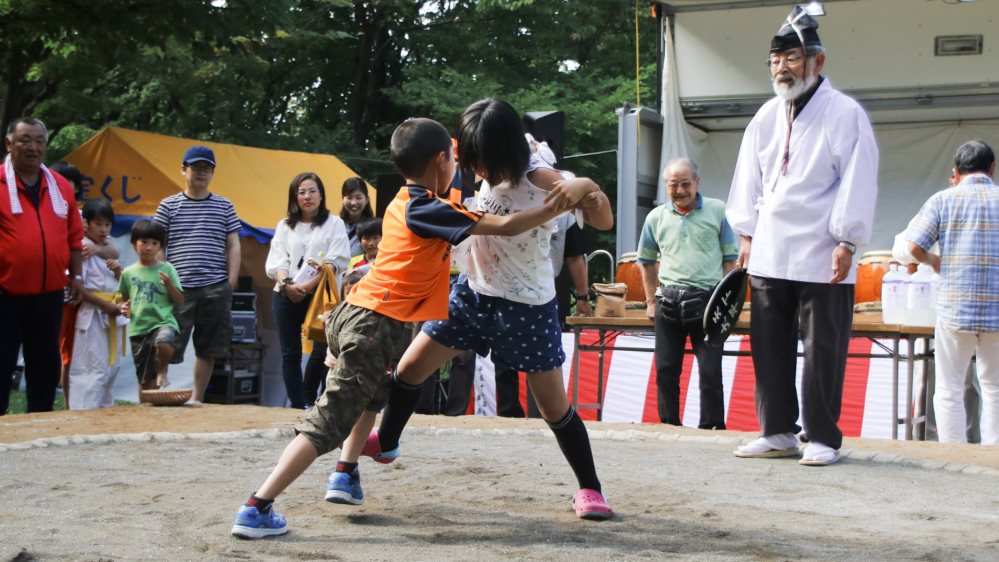

Το SUMO, παραδοσιακό ιαπωνικό άθλημα με ιστορία αιώνων, αποτελεί όχι μόνο ένα σωματικό αγώνισμα αλλά και ένα εργαλείο ανάπτυξης ψυχοσωματικών δεξιοτήτων για παιδιά. Σε αντίθεση με απλές αθλητικές δραστηριότητες, το SUMO συνδυάζει σωματική ενδυνάμωση, στρατηγική σκέψη και κοινωνικές δεξιότητες, προσφέροντας ένα ολοκληρωμένο περιβάλλον μάθησης. Σύγχρονες μελέτες στην παιδική ψυχολογία και την κινητική ανάπτυξη δείχνουν ότι τα παιδιά που συμμετέχουν σε οργανωμένα αθλήματα όπως το SUMO αναπτύσσουν υψηλότερα επίπεδα αυτοπεποίθησης, συγκέντρωσης και κοινωνικών δεξιοτήτων (Martens, 2012; Bailey et al., 2013).
Η παιδική ηλικία είναι κρίσιμη για την ανάπτυξη κινητικών δεξιοτήτων, ισορροπίας και νευρομυϊκής συναρμογής. Το SUMO απαιτεί σταθερή στάση, ισχυρά πόδια και κορμό, καθώς και ακριβείς κινήσεις χεριών και ποδιών. Έρευνες έχουν δείξει ότι αθλήματα που βασίζονται σε ισορροπία και δύναμη, όπως το SUMO, ενισχύουν:
Η προπόνηση στο SUMO για παιδιά ηλικίας 6–14 ετών συμβάλλει επίσης στην αναπτυξιακή δύναμη και στη βελτίωση της καρδιοαναπνευστικής αντοχής (Faigenbaum et al., 2009). Αυτό οφείλεται στη φύση των αγώνων, που συνδυάζουν εκρηκτική δύναμη, ισορροπία και σπριντ μικρής διάρκειας.
Η παιδική αυτοεκτίμηση είναι στενά συνδεδεμένη με την εμπειρία επιτυχίας μέσα σε οργανωμένα πλαίσια μάθησης. Κάθε νίκη ή επιτυχημένη εκτέλεση τεχνικής στο SUMO ενισχύει την αίσθηση αυτοαποτελεσματικότητας (Bandura, 1997).
Παράλληλα, το άθλημα διδάσκει στα παιδιά υπομονή και σεβασμό προς τον αντίπαλο, στοιχεία που μεταφέρονται στην κοινωνική ζωή τους. Έρευνες στην παιδική ψυχολογία υπογραμμίζουν ότι παιδιά που συμμετέχουν σε αθλήματα με κανόνες, όπως το SUMO, παρουσιάζουν:
Η αυτοπεποίθηση που αποκτούν τα παιδιά μέσα από το SUMO δεν περιορίζεται στην αθλητική αρένα. Μελέτες δείχνουν ότι μεταφέρεται σε σχολικές επιδόσεις, δημόσιες εμφανίσεις και καθημερινές προκλήσεις (Fraser-Thomas et al., 2005).
Η πρακτική του SUMO απαιτεί συγκέντρωση και πειθαρχία, ακόμα και για τα μικρά παιδιά. Οι αθλητές πρέπει να ακολουθούν οδηγίες προπονητή, να παρατηρούν τον αντίπαλο και να διατηρούν ισορροπία υπό πίεση. Αυτό ενισχύει:
Οι ψυχολογικές και νευρομυϊκές δεξιότητες που αποκτούνται μέσω του SUMO συμβάλλουν στη γενικότερη εκπαίδευση του παιδιού ως ολοκληρωμένου ατόμου (Gabbard, 2018).
Η συστηματική πρακτική του SUMO για παιδιά μπορεί να γίνει μέρος ενός ολοκληρωμένου προγράμματος σωματικής και ψυχολογικής ανάπτυξης. Προγράμματα διάρκειας 2–3 εβδομάδων με εντάσεις κατάλληλες για την ηλικία των παιδιών ενισχύουν τις δεξιότητες με μετρήσιμα αποτελέσματα.
Συνιστάται να υπάρχει συνεχής παρακολούθηση από έμπειρο προπονητή, ώστε να διασφαλίζεται η ασφάλεια και η σωστή εκμάθηση των τεχνικών. Η ενσωμάτωση παιχνιδιών, διαγωνισμών και φιλικών αγώνων ενισχύει την κοινωνική διάσταση του αθλήματος.
Το SUMO αποτελεί ένα πολύτιμο εργαλείο ανάπτυξης για παιδιά, συνδυάζοντας σωματική δραστηριότητα, ψυχολογική ωρίμανση και κοινωνική μάθηση. Μέσα από την εκπαίδευση στο άθλημα, τα παιδιά:
Με την κατάλληλη καθοδήγηση, το SUMO μετατρέπεται σε ένα ολοκληρωμένο εργαλείο παιδικής ανάπτυξης, που υποστηρίζει τόσο την ψυχοσωματική όσο και την κοινωνική εξέλιξη των παιδιών.
Οι αναφορές είναι γενικά για τον αθλητισμό και την ανάπτυξη παιδιών. Το SUMO βασίζεται σε αυτά τα επιστημονικά ευρήματα.
